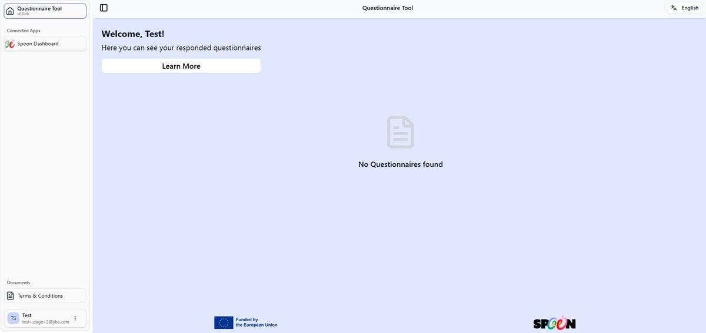
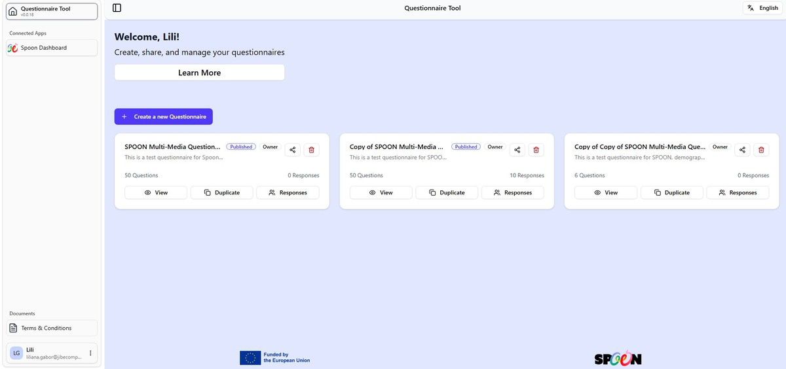
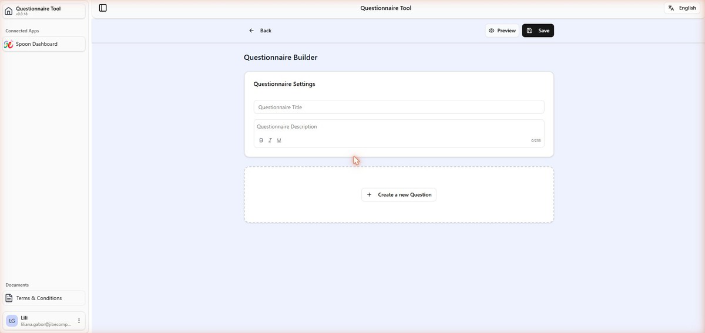
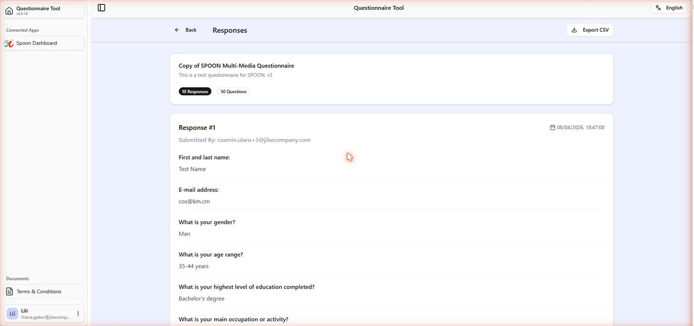

Questionnaire Tool¶
Overview¶
The Questionnaire Tool (v0.0.18) at forms.datau.jibe.cloud — referred to in WP2 documentation as the Questionnaire Generator — is the researcher-facing survey platform of the SPOON toolset.
It lets research teams design, publish, and manage multi-format questionnaires that collect data on citizens' food habits, shopping behaviours, dietary preferences, and attitudes toward food labels and sustainability. Partners across the 16-partner SPOON consortium use this tool to build their study instruments rather than building their own data-collection apps.
Questionnaires are distributed to citizen participants via a shareable link. Responses are collected securely and linked to citizen DataU accounts, ensuring consent-based data handling throughout. Collected data can be exported as CSV and uploaded to the Spoon Data Lake for anonymised analysis.
Citizen view
Citizens who open the Questionnaire Tool from their account see only the questionnaires they have responded to. The view is read-only and shows no creation options.
Figure 2.1 — Questionnaire Tool (citizen view) showing no responded questionnaires yet

Managing questionnaires¶
The home page lists all questionnaires. Each card displays:
- Title and description
- Status — Published or Draft
- Role — Owner or Collaborator
- Number of questions and number of responses collected
Actions available per questionnaire¶
- View — preview the questionnaire as respondents see it
- Duplicate — copy it as a new starting point
- Responses — view all submissions and export as CSV
Figure 2.2 — Questionnaire Tool home (researcher) showing questionnaire cards with status, questions count and responses

Building a questionnaire¶
Click Create a new Questionnaire to open the Questionnaire Builder. The builder provides a title field (max 255 characters), a description field, Questionnaire Settings, and a Create a new Question button.
Supported question types¶
- Short text — free-text single-line answer
- Single choice — radio buttons, one answer only
- Multiple choice — checkboxes, select all that apply (with optional min/max limits)
- Scale — numeric rating 1–5 with custom end labels
- Ranking — drag-and-drop ordering with a maximum selection limit
- Image upload — respondents upload photos (can be marked optional)
- Matching / Connect — connect items to positions
- Likert / Agreement — agree/disagree statements rated 1–5
Saving and publishing¶
- Preview — see the respondent view at any time
- Save — save a draft without publishing
- Publish — publish the questionnaire; to be able to publish the questionnaire all data types used in the questionnaire must be approved first (not in pending state)
- Share — generate a shareable link for respondents
Questions marked with * are required.
Figure 2.3 — Questionnaire Builder with title, description fields and Create a new Question button

Viewing & exporting responses¶
Open Responses on any questionnaire to see all submissions. Each response shows:
- Response number and submission timestamp
- Submitted by (email address of respondent)
- All answers, including "No Response" for skipped questions
Click Export CSV (top-right) to download all responses as a spreadsheet for external analysis or upload to the Data Lake.
Figure 2.4 — Responses page showing individual submissions with timestamp, respondent email and all answers

Sidebar¶
- Connected Apps — quick link back to the SPOON Dashboard
- Documents → Terms & Conditions — platform T&Cs PDF
- Your user profile: name, email, initials avatar